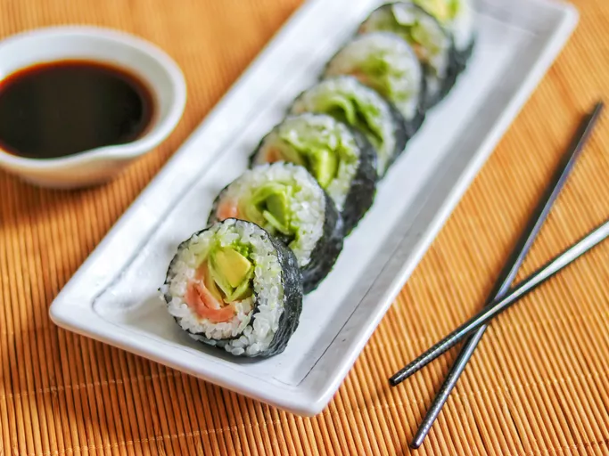

Smoked-Salmon-Sushi-Roll

Smoked Salmon Sushi Roll
Homemade salmon roll made with sushi rice, nori, and smoked salmon. This is a very basic and easy recipe for making sushi. It might take a while to learn how to make a perfect roll, but you'll have fun trying! Add wasabi (Japanese horseradish) for a good kick!
Ingredients to make Smoked-Salmon-Sushi-Roll
- These homemade salmon sushi rolls are surprisingly easy to make with sushi rice, rice wine vinegar, seaweed, wasabi paste, smoked salmon, a cucumber, and an avocado.
How to Make Salmon Rolls
You'll find the full, step-by-step recipe below — but here's a brief overview of what you can expect when you make salmon sushi at home:
- Soak and cook the rice, then mix in the vinegar and cool in an even layer on a plate.
- Assemble the sushi rolls based on the detailed recipe below.
- Roll the sushi tightly and cut into eight pieces..
What to Serve With Salmon Rolls
- Miso Soup
- Simple Roasted Edamame
- Homemade Pickled Ginger
- Kombu Seaweed Salad
How to Store Salmon Rolls
These salmon sushi rolls are best served right away, but you can refrigerate them in an airtight container for up to two days.
Ingredients
- 2 cups Japanese sushi rice
- 6 tablespoons rice wine vinegar
- 6 sheets nori (dry seaweed)
- 2 tablespoons wasabi paste
- 8 ounces smoked salmon, cut into long strips
- 1 cucumber, peeled and sliced
- 1 avocado - peeled, pitted and sliced
Directions
- Soak rice for 4 hours. Drain rice and cook in a rice cooker with 2 cups of water. Rice must be slightly dry as vinegar will be added later.
- Immediately after rice is cooked, mix in rice wine vinegar; spread rice on a plate until completely cool.
- Place 1 sheet of seaweed on a bamboo mat; press a thin layer of cool rice on seaweed, leaving at least a 1/2 inch top and bottom edge of the seaweed uncovered. This is for easier sealing later. Dot some wasabi on rice; arrange smoked salmon, cucumber, and avocado on rice about 1 inch away from the bottom edge of seaweed.
- Slightly wet the top edge of seaweed; roll up tightly from the bottom to the top edge with the help of the bamboo mat. Cut salmon roll into 8 equal pieces and serve. Repeat for other rolls.